Digital Humanities Crash-Course
April 19 — 26
Course slides & materials
danilsko.github.io/DHelsinki
Самая Главная Ссылка
Warning
This presentation is Non-Linear
Use SPACE to go forward, SHIFT+SPACE to go back
Plan for today
- About me
- (and about you!)
- About Digital Humanities
- Some history of humanities computing
- Contemporary DH
- What we will learn in this course
- Some Russian Sweets (to sweeten the bitter roots of knowledge) 🍰 🍬
About me
- Full name: Daniil Skorinkin
- Just call me Danya (DAAnyuh, IPA:'dɑːnjə) or Dan
- Work at HSE: hse.ru/staff/skorinkin
- Computational linguist/NLP specialist by origin
- 'Digital Humanist' by current trade
...Your turn, please, I am all 👂
and Please fill
tinyurl.com/y95l7ggp
About Digital Humanities
or …What is Digital Humanities?
..is almost a topic of research in itself
whatisdigitalhumanities.com will give you 817 definitions
My favourite definition
Taking tools built by warmongers, spy agencies & investment bankers and using them to study literature, philosophy, culture and the classics
(Elijah Meeks, Stanford Digital Scholarship)
So, basically it's
Applying computational methods and some IT to research in the humanities
DH specifics
- emphasis on building/crafting
- alternative teaching formats:
- hackathons, workshops, summer/winter/spring schools
- virtual research environments
- team work rather than solitary work
- the project as basic unit:
- "a kind of scholarship that requires design, management, negotiation, and collaboration" (Jeffrey Schnapp)
...so, let's hear what Wiki has to say about DH
Digital humanities (DH) is an area of scholarly activity at the intersection of computing or digital technologies and the disciplines of the humanities.
Цифровые гуманитарные науки — это область исследований, обучения и созидания, созданная на стыке компьютерных и гуманитарных наук.
but enough definitions

Picture source: How Not to Teach Digital Humanities
Mapping the DH
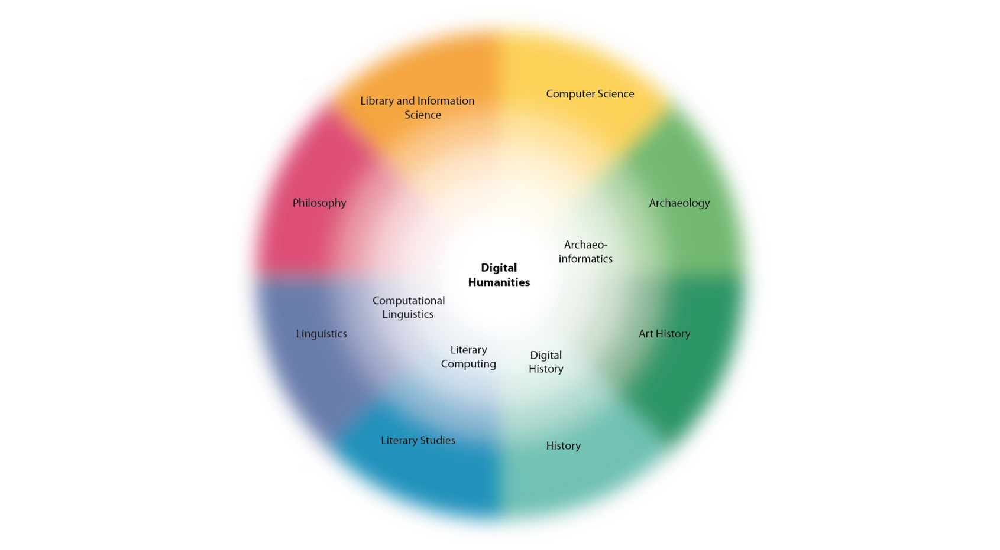some history
Two major (intertwined) stories
- Scholars trying to formalize & calculate stuff in the humanities
- Scholars applying computers to these formalisations and calculations
XIX century
- 1851 — A. De Morgan suggests mean word-length as an authorship feature
- 1887 — T. Mendenhall, 'The Characteristic Curves of Composition' (picture)
- 1890 — W. Lutosławski, 'Principes de stylométrie', establishing the chronology of Plato's Dialogues

early XX century
-
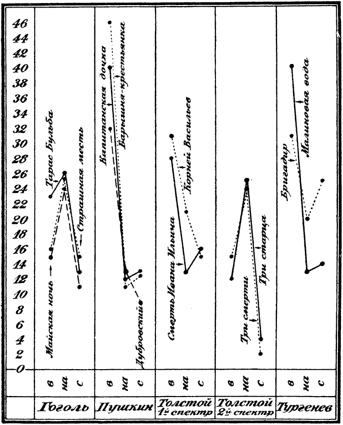
- Calculations in Poetry (e.g. Andrei Beliy, 1910)
- 1915 — N. Morozov, 'Linguistic Spectres' (picture)
- 1915-1930 (roughly) — 'Formal Method' in literary studies (Russian Formalism)
Formalism
-
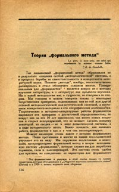
- V. Shklovsky (1917): literary scholarship has to withstand 'scientific scrutiny'('выдерживать научную критику')
- B. Eikhenbaum (1925): the need to 'propagate objective/scientific handling of facts' ('пропаганда объективно-научного отношения к фактам')
Formalism
-
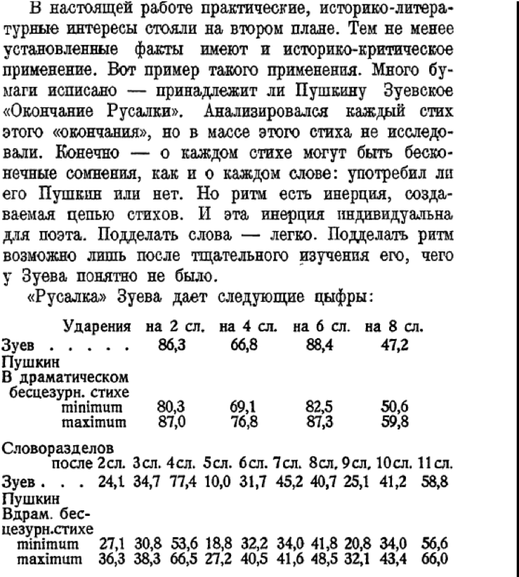
- B. Tomashevskiy
- Renowned literary scholar with an electrical engineering degree from Université de Liège
- Statistics in Poetry, e.g. «Пятистопный ямб Пушкина» (1923) (picture)
Formalism and around it
-
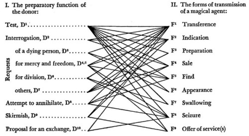
- 'Formal Folkloristics': V. Propp and his 'Morphology of the Folktale'
Boris Yarkho (1889 — 1942)
- Methodology of Exact Literary Studies ('Методология точного литературоведения')
- Speech Distribution in a 5-act tragedy ('Распределение речи в пятиактной трагедии')
Actual computing: Roberto Busa (1913 - 2011)

Andrew Morton
- Morton, The Authorship of the Pauline Epistles: A Scientific Solution. Saskatoon, 1965.
- Highly influential work that clamied only 4 epistles were written by St. Paul himself 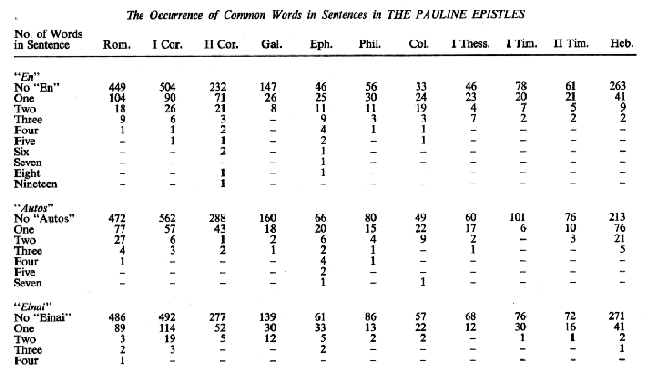
Structuralism
- R. Jakobson as a transitional figure
- R. Barthes (1967), 'Death of the Author' (ideologically rather similar to formalism)
- С. Levi-Strauss (influenced by Jakobson, possibly also by Propp), formal analysis of fairytales
Moscow-Tartu Semiotic School (MTSS)
-
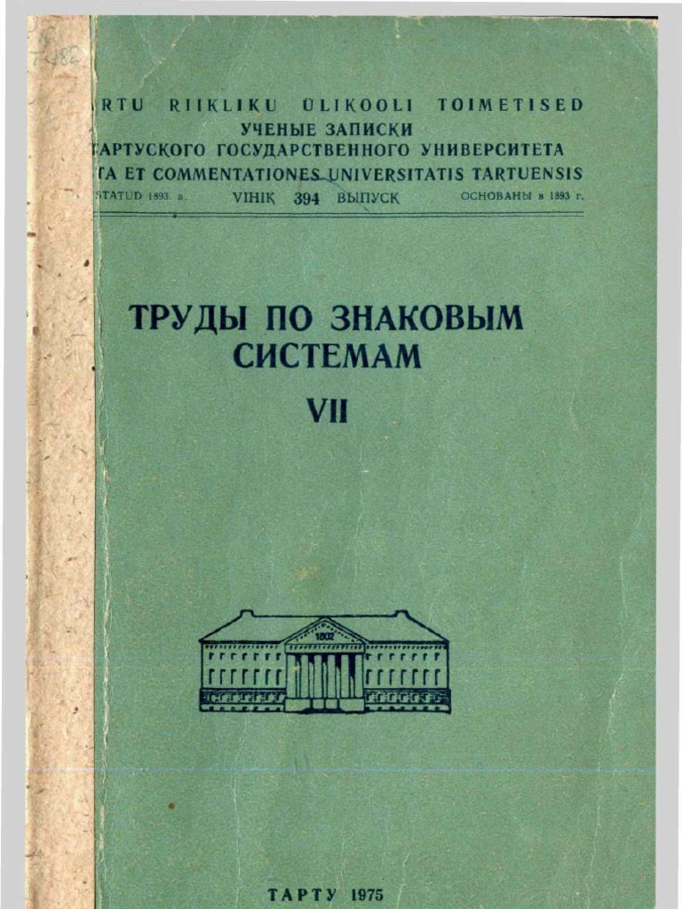
- Yuri Lotman (1967, same as Barthes): 'Literary studies should become a science' (Литературоведение должно быть наукой)
- O. Revzina and I. Revzin (influenced by Solomon Marcus)
- Sign Systems Studies ("Труды по знаковым системам") since 1964
- Poetry studies by M. L. Gasparov ('Semantic halo of a meter')
Case of MTSS influence: V. Sapogov
- V. Sapogov (1974) Nekotorye harakteristiki dramaturgičeskogo postroeniâ komedii A. N. Ostrovskogo »Les« [Some Characteristics of the Dramatic Construction of A. N. Ostrovsky's Comedy »The Forest«]
- Quantitative analysis of Ostrovsky's play using simple character dynamics count
Sapogov's will
'Возможности содержательной интерпретации полученных параметров текста комедии “Лес” многократно увеличатся, если сравнить их с таким же образом описанными другими произведениями Островского и с пьесами его предшественников и современников'
Try it yourself at
rus.dracor.org
Soviet Literary Computing — also in Tartu
-
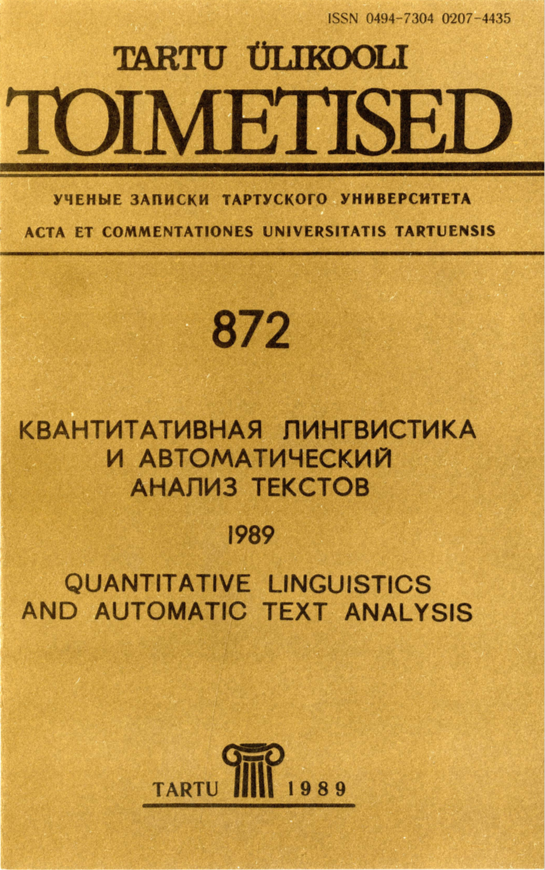
- Гринбаум О. Н. Структуризация худ. прозы с использованием ЭВМ. 2 : Детализация структурированного текста / О. Н. Гринбаум // Квантитативная лингвистика и автоматический анализ текстов. Тарту, 1989.
Digital Humanities Today
Digital Archeology
& Digital Preservation
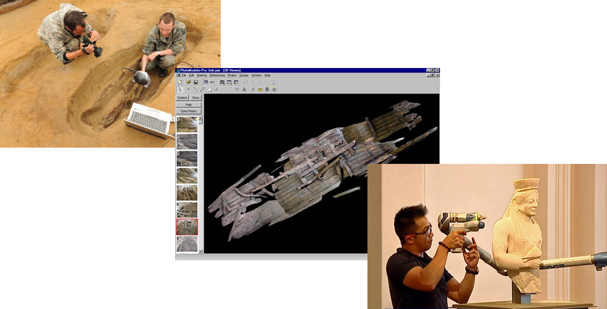Virtual Museums
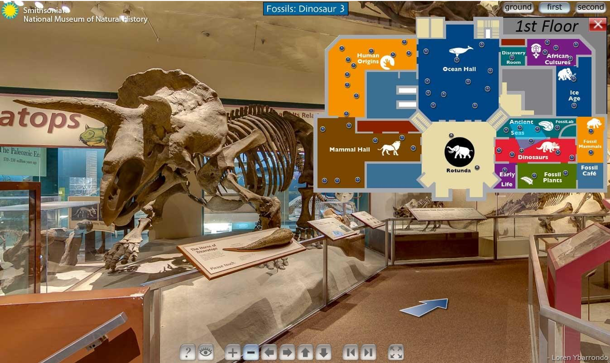GIS and the Humanities
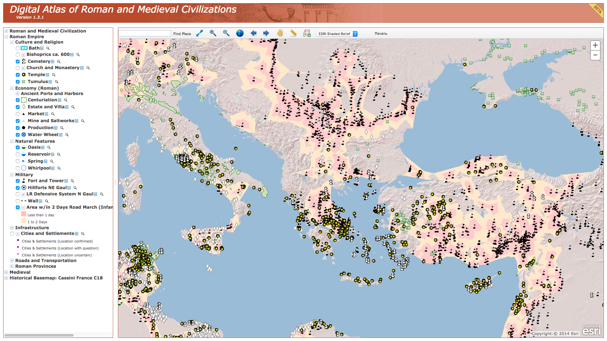Digital Editions
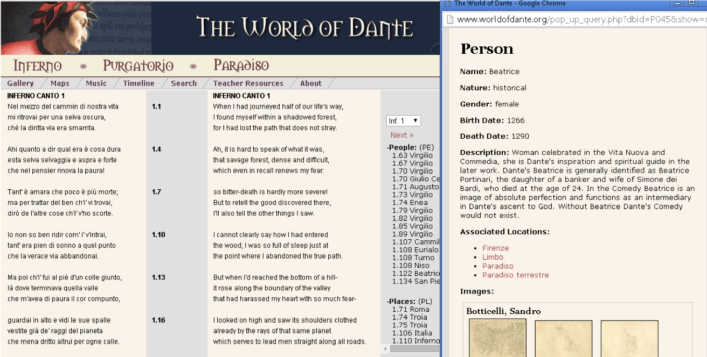Digital Editions
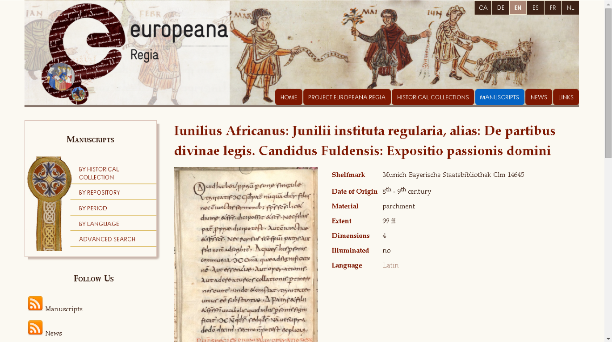Digital Editions
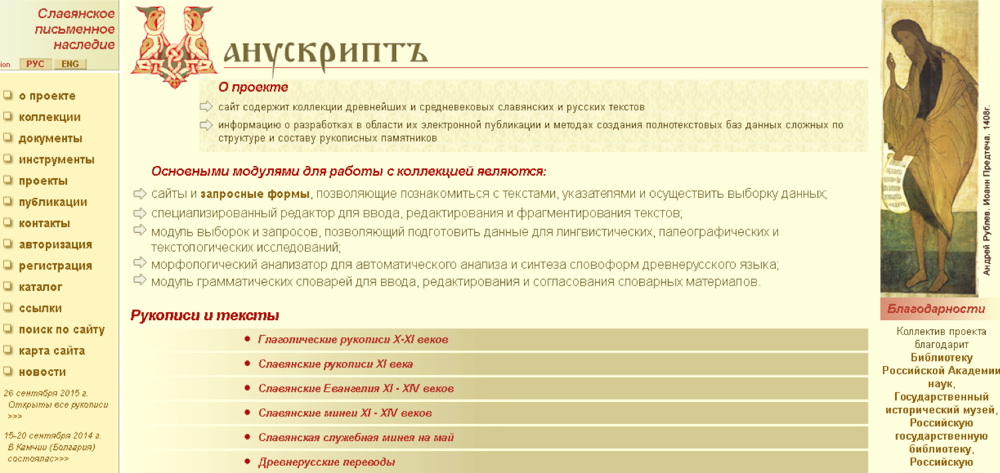'Cultural Evolution'
(quantitative culturology)
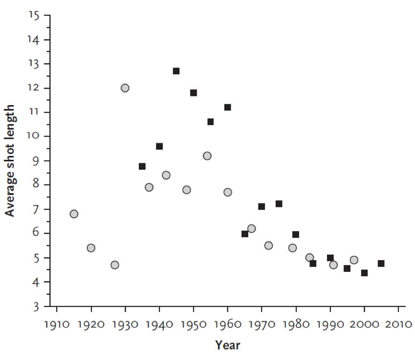'Cultural Evolution'
(quantitative culturology)
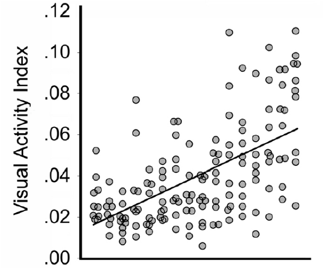 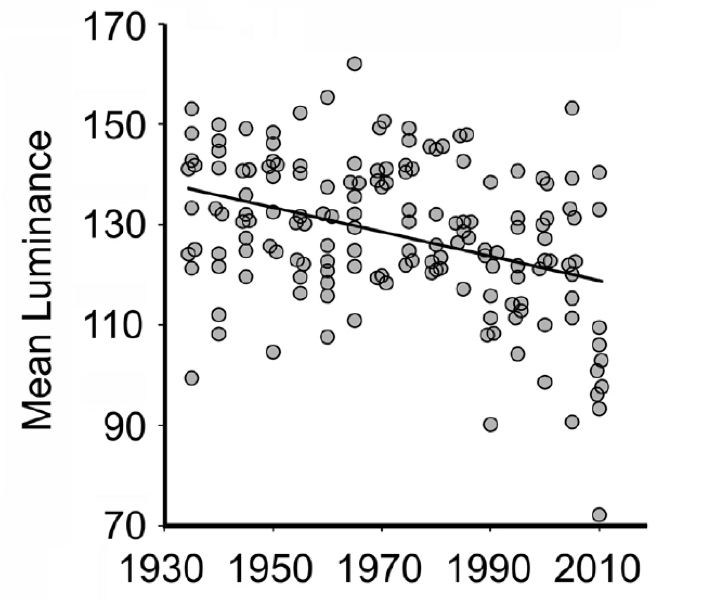How Do We Read Graphic Novels?

Eye-tracking helps!
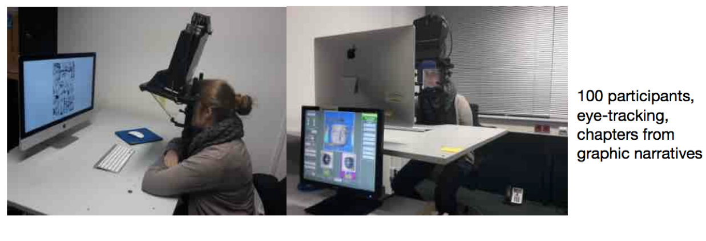Focus on text, faces, hands
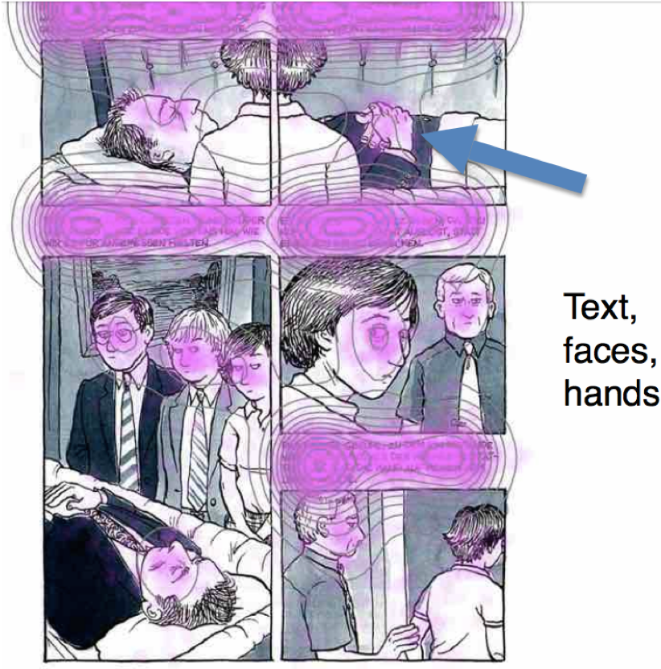 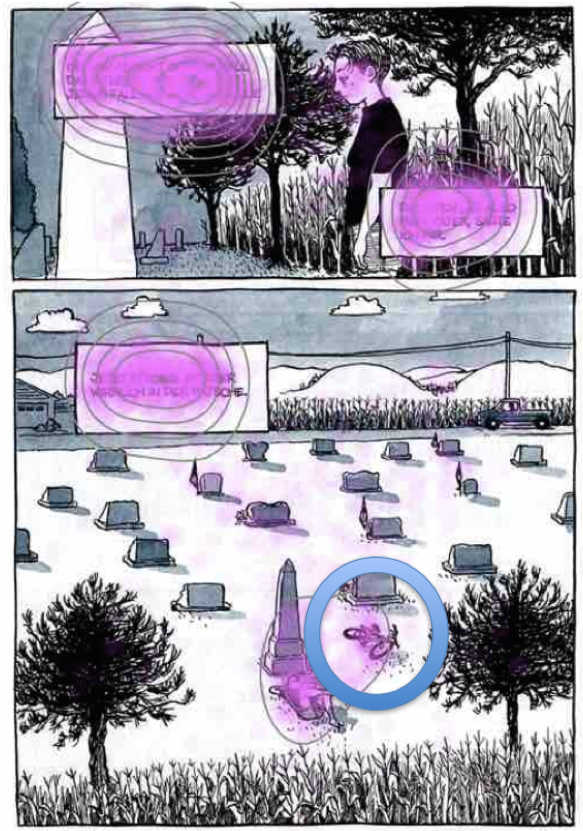Culturomics
- Michel, Jean-Baptiste; Liberman Aiden, Erez (2011). Quantitative Analysis of Culture Using Millions of Digitized Books. Science. 331 (6014): 176–82
Google Books
- 'We constructed a corpus of digitized texts containing about 4% of all books ever printed. Analysis of this corpus enables us to investigate cultural trends quantitatively. We survey the vast terrain of “culturomics”, focusing on linguistic and cultural phenomena <...>'
Culturomics in Google Books
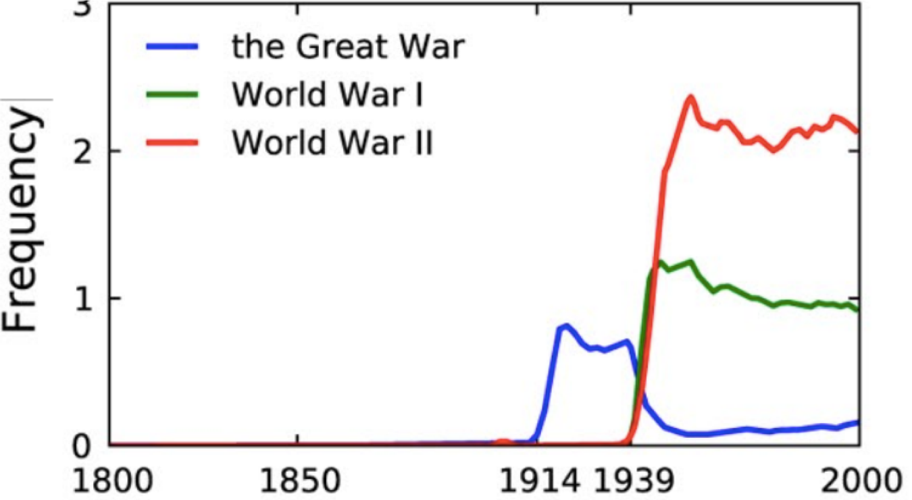Culturomics in Google Books
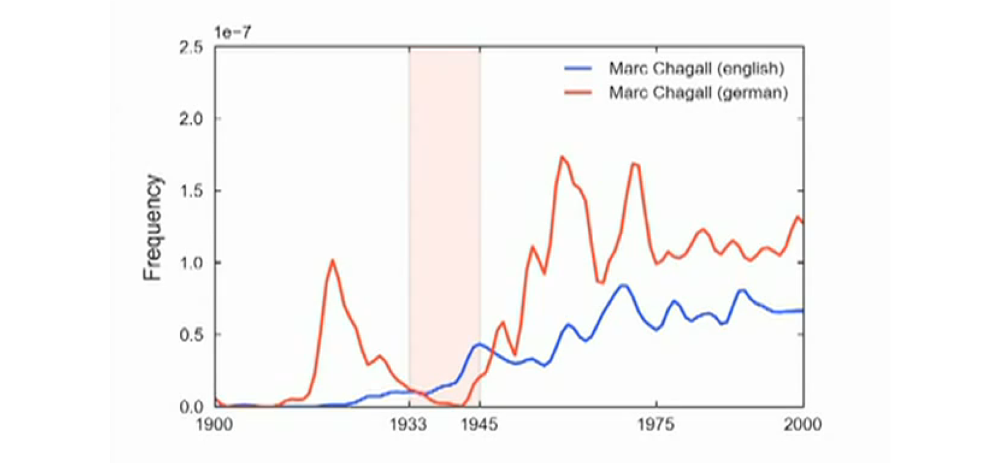Culturomics in Google Books

Culturomics in Google Books

The idea of Distant Reading
"[…] if you want to look beyond the canon […], close reading will not do it. It’s not designed to do it, it’s designed to do the opposite. […] we know how to read texts, now let’s learn how not to read them. Distant reading: where distance […] is a condition of knowledge […]."stylometry